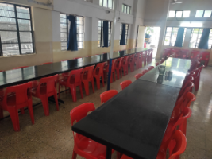
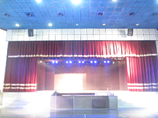

Old girls and old boys
Alumni speak
From the Sisters of Wantage to the tile wall of the sesquicentennial — letters, gifts and a walk down memory lane.
Vanessa Ann Busfield — née Rispin
I am now 71 years old and have led an interesting life, in several countries, learning a few languages along the way. However, the grounding and education I enjoyed came from a time which started 60 years ago.
I went to St. Mary's School in Poona — now Pune — from 1962 to 1967, where I did my Indian School Certificate finals. They were then referred to as the Cambridge School Certificate because our papers were sent to Cambridge for correction and assessment.
The education under the supervision of the CSMV nuns, and with brilliant teachers, was second to none. We were afforded a very thorough schooling in all aspects of life, not just the things one learns from books, but good behaviour, respect for all and, (for me) most importantly, the foundation of my Faith. This has stood me in good stead and helped me through some very challenging times and situations.
St. Mary's School was my 'safe' place and where I found solace and sanctuary. I even opted to stay in school for the autumn holidays. My fondest memories are of my nuns — Sr. Susan Dominica, Sr. Mary Columba (who was a magician on the organ), Sr. Cora, Sr. Rita Mary, Sr. Stella Frances, Sr. Hilda Kathleen, Sr. Frances Hilda, Sr. Mary Anselm, Sr. Mary Frideswide, Mother Doreen, Sr. Judith Ann and, of course, Sr. Valeria.
All that I learnt at St. Mary's has made me who I am today. All the above mentioned were strict but always fair, and I shall hold them in great esteem and affection forever.

Felicity Simmons (Malfiggiani)
Yes, I completed Standard 8 way back in 1955 — a rough calculation makes me HOW OLD??? Hmm! Yes, that's right 80+ and still I'm proud to tell everybody who asks “Where are you from?” — because of my accent — that I was born and bred in India and I went to school at St. Mary's High School in Poona (Pune).
I have written a book, “STEPPING STONES – A PASSAGE OUT OF INDIA”, which includes quite a lot about SMS, Pune. It is very historical about both India (as a new Republic and the withdrawal of the British) and SMS as it was in the mid-twentieth century. I remember singing the 'new' Indian anthem — which I can still sing. I have returned to India twice and, of course, to SMS also. The last time was for the 150th anniversary celebrations when I was accompanied by my daughter.
A walk down memory lane
Excited voices called out to each other as ladies — or should we call them 'girls' — walked in through the gates of St. Mary's on the warm, balmy afternoon of the 15th of January. They were the alumni of the school who had been invited to walk around the campus and re-live their school days — some even in their School uniforms — as part of the sesquicentennial year celebrations.
The SMS Circle and the Tile Wall grabbed their attention. A nostalgic tour of the verdant campus, the classrooms, the chapel and the sports grounds drew loud exclamations. Some of the more agile ladies even ventured to a round of basketball.
The alumni were then seated in the auditorium where they revelled in the delightful music provided by the school choirs. A film showing an interview with a very lucid and composed Sister Valeria at Wantage was probably the most memorable part of the evening. Words of the school song, tea along with snacks from the school canteen and memorabilia bought from our “Store of Nostalgia” ensured that memories of school would remain entrenched in their minds for a very long time.

Thank you to the SMS Alumni Association
Mrs. Veena Vora, President and Mrs. Sarla Kumar, Vice President of the St. Mary's School Alumni Association handed over the following cheques to the Board members and the Principal on 25th February 2016, on behalf of the Association:
- Alumni Association & Prashanti Cancer Care Mission — Rs 3,09,000/-
- Mrs. Malti Mansukhani Desai — Rs 1,00,000/-
- Mrs. Surekha Kher — Rs 32,000/-
- Mrs. Daulat Oberoi — Rs 10,000/-
- Mrs. Brinda Abreo — Rs 7,001/-
We would like to thank the SMS Alumni Association for their contribution to the School for the sesquicentennial year.
160 years, and the buildings still to raise
The School has always pioneered quality education, made possible by partnership with all stakeholders. Reconstruction of the Boys' Assembly Hall Building (Phase I, 2022–2023) and furniture, projectors, tablets, play area, auditorium systems and acoustics (Phase II) were put to the community as a CSR and alumni appeal. Intent to donate may be sent to info@smspune.com. Account name: The Society of St Mary's School. Bank of Maharashtra, Camp, Pune.